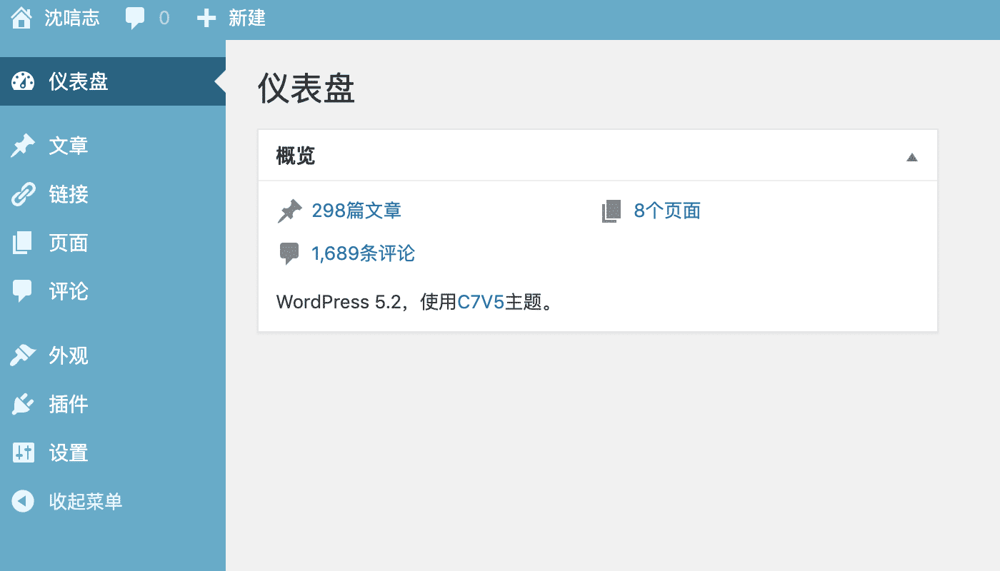

WordPress 的功能十分强大，但是有些功能模块我们平时是用不到的，所以说一下如何使用代码将它们屏蔽掉
根据自己的需要，将下面代码添加到当前主题functions.php或functions-diy.php文件中
推荐在原functions.php加入一个自定义文件
1
| require get_template_directory() . '/functions-diy.php';
|
将我们自定义的代码加入到其中，无须担心更新主题时functions.php被覆盖
那么我们从上至下开始清理吧
顶部工具栏
1
2
3
4
5
6
7
8
9
| function my_edit_toolbar($wp_toolbar) {
$wp_toolbar->remove_node('wp-logo');
$wp_toolbar->remove_node('site-name');
$wp_toolbar->remove_node('updates');
$wp_toolbar->remove_node('comments');
$wp_toolbar->remove_node('new-content');
$wp_toolbar->remove_node('top-secondary');
}
add_action('admin_bar_menu', 'my_edit_toolbar', 999);
|
左侧顶级菜单
1
2
3
4
5
6
7
8
9
10
11
12
13
14
15
16
17
18
19
20
21
22
23
24
25
26
27
28
29
30
31
32
33
34
| function remove_menus() {
global $menu;
$restricted = array(
__('Dashboard'),
__('Posts'),
__('Media'),
__('Links'),
__('Pages'),
__('Appearance'),
__('Tools'),
__('Users'),
__('Settings'),
__('Comments'),
__('Plugins')
);
end ($menu);
while (prev($menu)){
$value = explode(' ',$menu[key($menu)][0]);
if(strpos($value[0], '<') === FALSE) {
if(in_array($value[0] != NULL ? $value[0]:"" , $restricted)){
unset($menu[key($menu)]);
}
}else {
$value2 = explode('<', $value[0]);
if(in_array($value2[0] != NULL ? $value2[0]:"" , $restricted)){
unset($menu[key($menu)]);
}
}
}
}
if (is_admin()){
add_action('admin_menu', 'remove_menus');
}
|
如果你只想删除用户和工具菜单，你只需改写以上代码第 3 行的$restricted数组修改为如下代码即可：
1
2
3
4
| $restricted = array(
__('Tools'),
__('Users'),
);
|
左侧子菜单
如果只想删除某个顶级菜单下的子菜单的话，可以这么写
1
2
3
4
5
6
7
8
9
10
| function remove_submenu() {
remove_submenu_page('index.php', 'index.php');
remove_submenu_page('index.php', 'update-core.php');
}
if (is_admin()){
add_action('admin_init','remove_submenu');
}
|
具体的缩略名如何获取呢？这里举例说明：
我们点击仪表盘时 url 为/wp-admin/index.php，点击首页时也是，点击更新时为/wp-admin/update-core.php，其他的依次类推～
只需要获取顶级菜单和子菜单相应的缩略名，然后在remove_submenu()函数内添加remove_submenu_page()函数即可
仪表盘无用模块
这个可以仪表盘右上角的显示选项中进行手动修改
1
2
3
4
5
6
7
8
9
10
11
12
13
14
15
16
17
18
19
20
| function example_remove_dashboard_widgets() {
global $wp_meta_boxes;
unset($wp_meta_boxes['dashboard']['side']['core']['dashboard_quick_press']);
unset($wp_meta_boxes['dashboard']['normal']['core']['dashboard_incoming_links']);
unset($wp_meta_boxes['dashboard']['normal']['core']['dashboard_plugins']);
unset($wp_meta_boxes['dashboard']['normal']['core']['dashboard_recent_comments']);
unset($wp_meta_boxes['dashboard']['side']['core']['dashboard_recent_drafts']);
unset($wp_meta_boxes['dashboard']['side']['core']['dashboard_primary']);
unset($wp_meta_boxes['dashboard']['side']['core']['dashboard_secondary']);
unset($wp_meta_boxes['dashboard']['normal']['core']['dashboard_right_now']);
}
add_action('wp_dashboard_setup', 'example_remove_dashboard_widgets' );
|
显示选项和帮助选项卡
1
2
3
4
5
6
7
| function remove_screen_options(){ return false;}
add_filter('screen_options_show_screen', 'remove_screen_options');
add_filter( 'contextual_help', 'syz_remove_help', 999, 3 );
function syz_remove_help($old_help, $screen_id, $screen){
$screen->remove_help_tabs();
return $old_help;
}
|
页脚版本信息
1
2
3
4
| function change_footer_admin () {return '';}
add_filter('admin_footer_text', 'change_footer_admin', 9999);
function change_footer_version() {return '';}
add_filter( 'update_footer', 'change_footer_version', 9999);
|
截图
